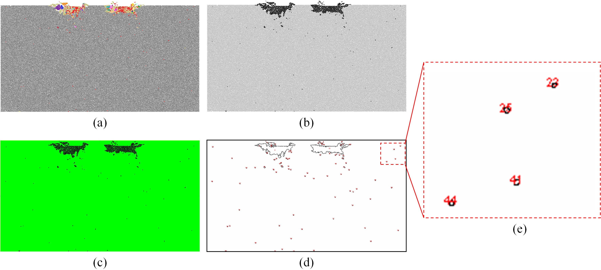
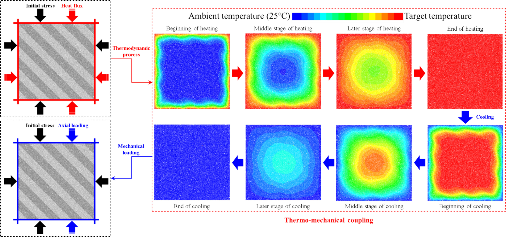
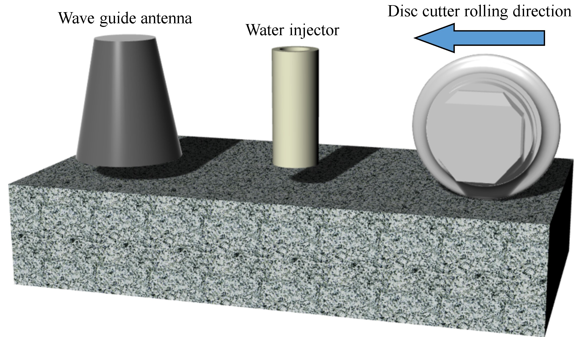

Rock fragmentation
Deep rock breakage, fracture mechanisms and efficient mechanized excavation.
Humboldt Research Fellow
TU Bergakademie Freiberg · Germany
Understanding rock behavior.
Advancing underground energy.
I study rock fragmentation, coupled processes, and computational geomechanics to support more efficient excavation and clean energy development.
Metrics reported in the original profile; see Google Scholar for current citation data.
I am a Humboldt Research Fellow at TU Bergakademie Freiberg, Germany, hosted by Prof. Heinz Konietzky. I received my PhD from Central South University under the supervision of Prof. Ming Tao.
During my doctoral studies, I was a joint PhD researcher at the University of Melbourne with Prof. Guillermo A. Narsilio. I also worked as a guest researcher at Monash University, collaborating with Prof. P. G. Ranjith.
My work integrates X-ray diffraction, digital image processing, Newton’s Second Law and Fourier’s Law of Heat Conduction into a multi-scale, multi-field modeling framework that reproduces the characteristics of real rock masses, with applications in clean energy development.
I have published more than 50 papers in journals including International Journal of Rock Mechanics and Mining Sciences, Rock Mechanics and Rock Engineering, Engineering Geology, Journal of Rock Mechanics and Geotechnical Engineering and Computers and Geotechnics. The original profile reports five ESI Highly Cited Papers (top 1%), two papers in Nature Index-listed journals, and more than 30 Chinese invention patent applications.
I serve as Associate Editor for Frontiers in Earth Science and Guest Editor for Applied Sciences. My reviewing service includes International Journal of Rock Mechanics and Mining Sciences, Journal of Rock Mechanics and Geotechnical Engineering, Tunnelling and Underground Space Technology, International Journal for Numerical Methods in Engineering, and Computers and Geotechnics.
Deep rock breakage, fracture mechanisms and efficient mechanized excavation.
Underground energy storage and thermal–hydraulic–mechanical–chemical coupling.
Grain-based DEM/FDEM models, multi-scale heterogeneity and engineering applications.

Rock Mechanics and Rock Engineering, 57, 10467-10489.

Engineering Geology, 339, 107645.

Journal of Rock Mechanics and Geotechnical Engineering, 17(1), 275-290.
17 publications
International Journal of Rock Mechanics and Mining Sciences, 205, 106597.
Bulletin of Engineering Geology and the Environment, 85, 149.
Journal of Rock Mechanics and Geotechnical Engineering, 17(1), 275-290.
ESI Highly Cited · top 1%International Journal of Rock Mechanics and Mining Sciences, 189, 106098.
ESI Highly Cited · top 1%Rock Mechanics and Rock Engineering, 59, 4821–4844.
Computers and Geotechnics, 186, 107431.
Underground Space, 20, 174-196.
ESI Highly Cited · top 1%Engineering Fracture Mechanics, 315, 110845.
Rock Mechanics and Rock Engineering, 57, 10467-10489.
Engineering Geology, 339, 107645.
Journal of Energy Storage, 83, 110631.
ESI Highly Cited · top 1%Engineering Fracture Mechanics, 310, 110479.
Energy, 292, 130489.
ESI Highly Cited · top 1%Malaysian Journal of Soil Science, 28, 12-25.
Fatigue and Fracture of Engineering Materials and Structures, 46(3), 814-834.
Theoretical and Applied Fracture Mechanics, 122, 103571.
International Journal of Damage Mechanics, 31(8), 1139-1164.
Try another title, author, journal or year.
Mar 2026 — Present
TU Bergakademie Freiberg · Germany
Geotechnical Institute · Host: Prof. Heinz Konietzky
Aug 2024 — Mar 2025
Monash University · Australia
Deep Earth Energy Research Laboratory · Collaborative Supervisor: Prof. P. G. Ranjith
CN202310213745.5 · China · 2023
CN202311586560.5 · China · 2024
CN202311820825.3 · China · 2024
CN202410329362.9 · China · 2024
CN202410747583.8 · China · 2024
CN202410747577.2 · China · 2024
Open to collaborations in geotechnical engineering and geophysics.
zhengyang.yz@outlook.com